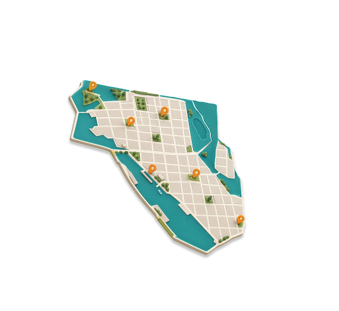
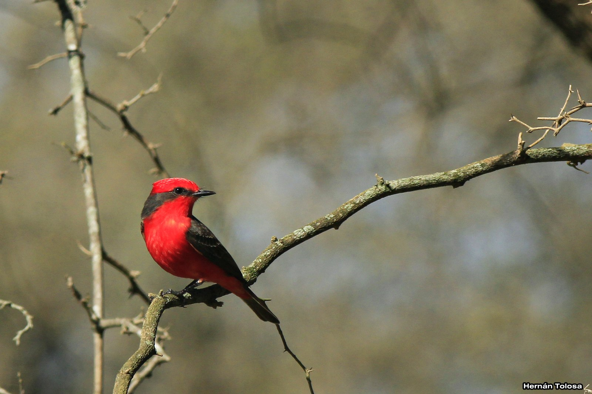
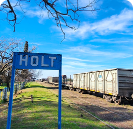
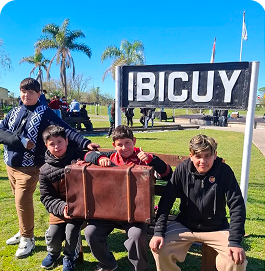

Historia
Rieles, puerto y memoria.
Ibicuy es una localidad del sur de Entre Ríos cuya identidad está ligada a su historia ferroviaria y portuaria, pero también al paisaje de agua, humedales y naturaleza que la rodea.

Rieles, puerto y memoria.

Agua, humedales y paisaje.

Lugares que cuentan.

Ibicuy en el presente.
Descubrir Ibicuy es recorrer las huellas de su pasado y reconocer
el territorio que continúa formando parte de su identidad.
“El río sigue su curso, el tiempo guarda su memoria y la escencia de Ibicuy se vive en cada historia”